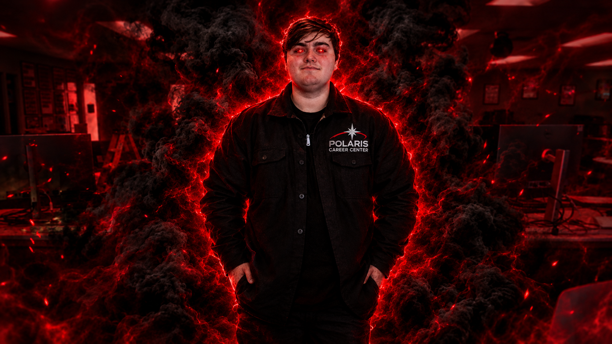

Nobody knew when Charles first appeared at the Career Center, only that the lights flickered, the temperature dropped, and a pale figure in a gray cardigan materialized between the walls. The cardigan hung open, revealing a faded button-up shirt with a small embroidered logo on the chest that read POLARIS. The letters glowed faintly, like a star that had given up on being impressive. "Hello," he said, in a voice like a dial-up modem sighing. "Did you know that the first computer mouse was made of wood?" Marcy, the night janitor, gripped her own cardigan. She had faced rats, mold, and other horrors, but nothing had prepared her for this. "It had two metal wheels," Charles continued, drifting closer, the Polaris logo pulsing with each syllable. "Douglas Engelbart patented it in 1970. The patent called it an X-Y position indicator for a display system."
"Please stop," Marcy whispered. "Oh, but I have only just begun." His eyes glowed a raging, terrible red. "A kilobyte is not actually 1,000 bytes. Depending on who you ask, it is 1,024. There is a distinction. There is a standard. There is a whole argument." Marcy dropped to her knees. "I'll do anything. Take my soul. Take my mop." "Your hard drive," Charles intoned, "is likely formatted with a cluster size of 4,096 bytes. This means that a file containing a single letter still occupies the entire cluster." He leaned in, and the Polaris logo flared. "Slack space." The janitor fled, screaming, into the parking lot. By dawn, the town of Middleburg Heights had learned to avoid the Career Center after dark. Some said Charles was the ghost of a long-dead IT technician, doomed to wander in his company shirt until someone, anyone, asked a follow-up question. Nobody could find any record of what happened that night in the Career Center.
Years later, Charles' old Computer Networking teacher named Mrs. Dark from Polaris came back to see if the rumors were true. She crept into the eerily empty career center at midnight. Charles appeared, glowing red, the logo shimmering on his chest, and opened his mouth. "Did you know that the QWERTY keyboard layout was designed to..." "Actually," said Mrs. Dark, "I already know that." Charles let out a long, rattling shriek, the scream of a being whose only weapon had finally failed him. He dissolved into a cloud of static and the faint smell of warm dust. The last thing to fade was the Polaris logo, flickering out like a dying star.
The lights stopped flickering after that.
But on quiet nights, if you listen closely near the reference desk, you can still hear it, faint and hollow, drifting from the dark:
"...did you know that the Caps Lock key was originally designed for typewriters?"
Shudder.
